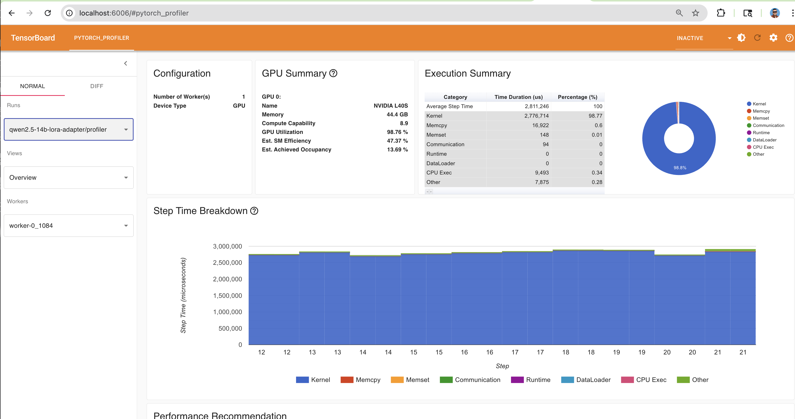
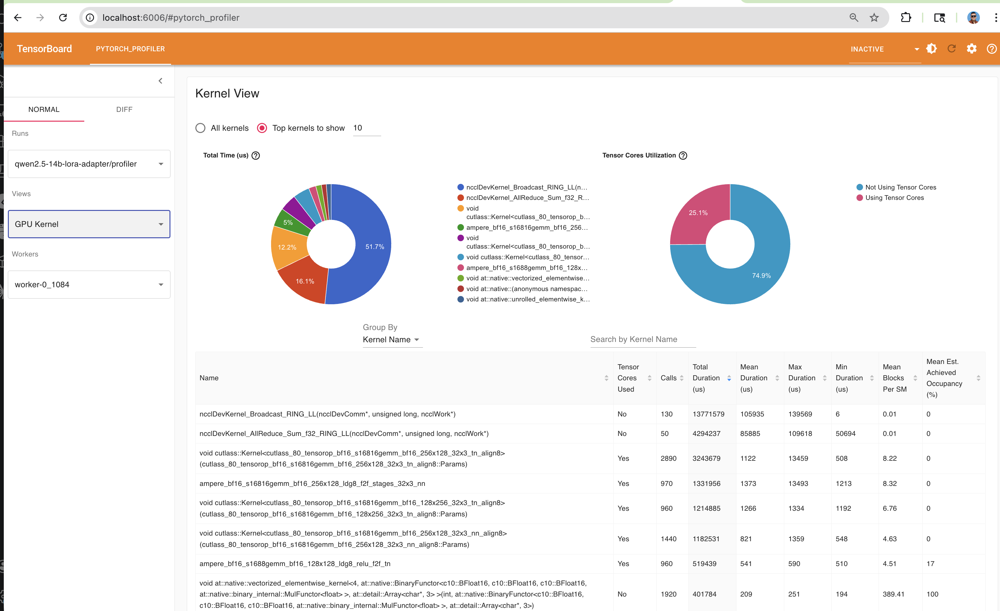
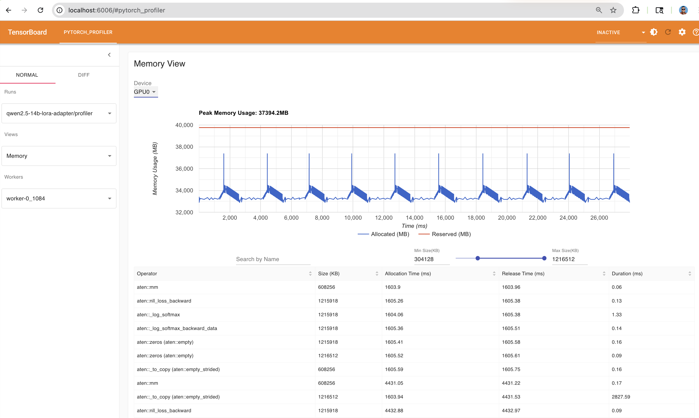
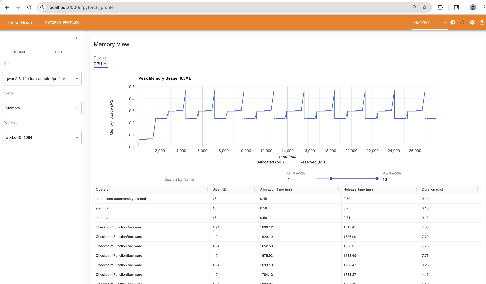
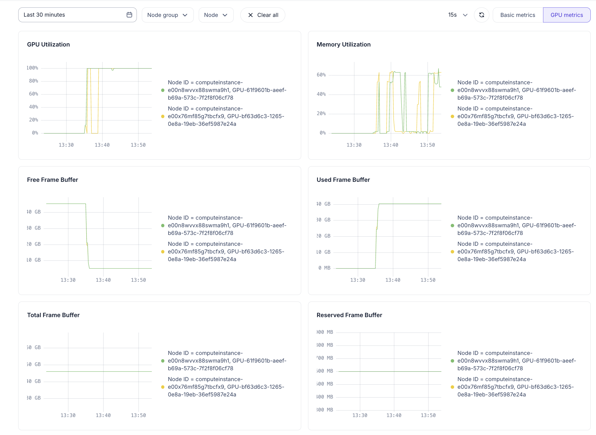
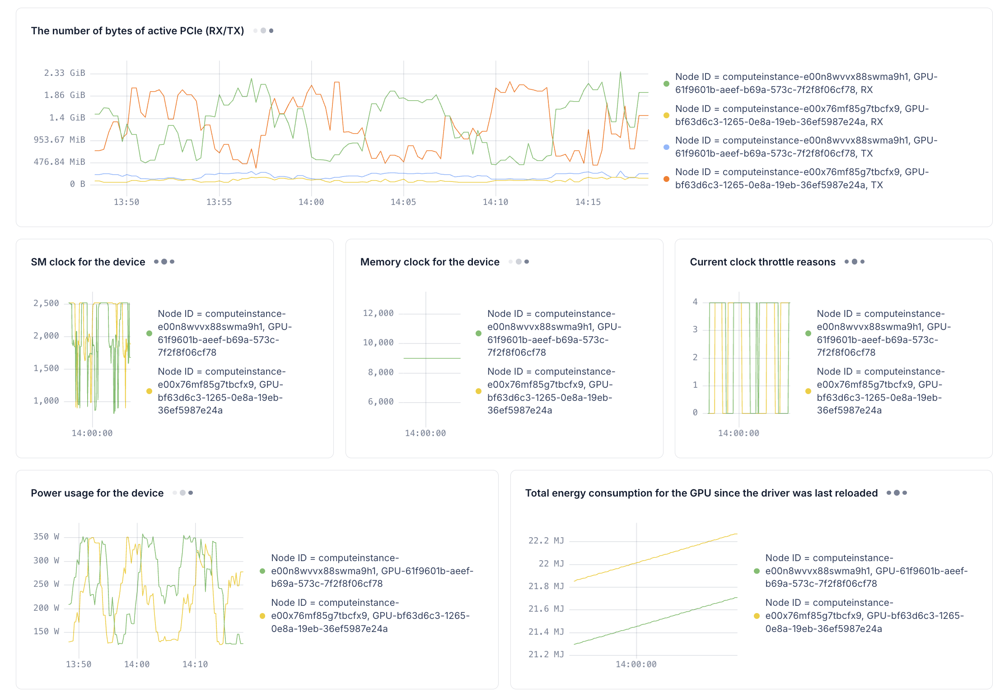
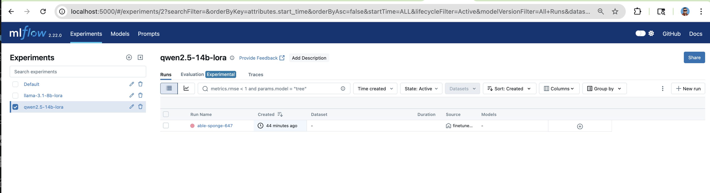
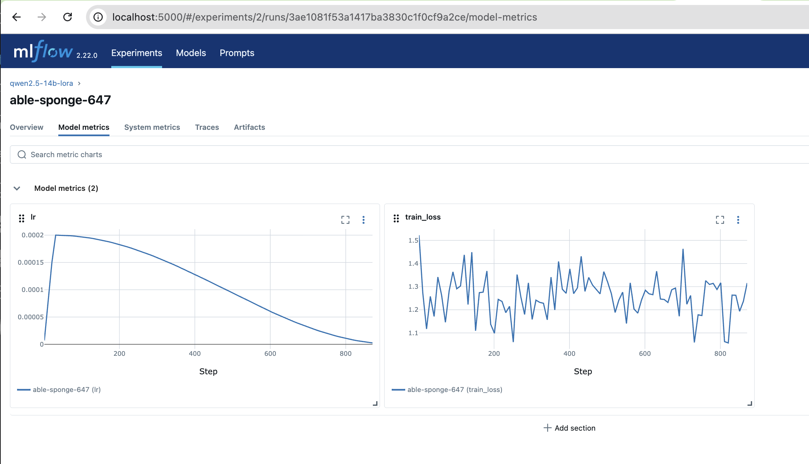

Fine-tuning Qwen 2.5 14B with LoRA across 2 nodes using Nebius Soperator (Slurm-on-Kubernetes). Profiling run (1 epoch) to validate GPU memory and performance before full training.
Qwen 2.5 14B (~29 GB in BF16) fits on 48 GB L40S GPUs with LoRA and gradient checkpointing. Batch size is reduced to 1 per GPU compared to Llama 3.1 8B (batch size 2) due to the larger model footprint.
| Parameter | Value |
|---|---|
| Base Model | Qwen/Qwen2.5-14B (~29 GB BF16) |
| LoRA Rank / Alpha | 16 / 32 |
| LoRA Targets | q_proj, k_proj, v_proj, o_proj |
| Learning Rate | 2e-4 (cosine schedule) |
| Batch Size | 1 per GPU |
| Sequence Length | 2048 (packed, no padding) |
| Precision | BF16 + SDPA |
| Gradient Checkpointing | Enabled |
| GPU | 2x NVIDIA L40S (48 GB each) |
| Interconnect | Ethernet (TCP/NCCL, no InfiniBand) |
| Dataset | Alpaca (46,801 train / 5,201 eval) |
A 1-epoch profiling run captures kernel execution, operator timings, memory allocation, and communication patterns across steps 10-20. Visualized in TensorBoard via the PyTorch Profiler plugin.


Peak GPU memory usage is 37,394 MB (~37.4 GB) out of 44.6 GB available on the L40S — approximately 84% utilization. This leaves limited headroom, confirming that batch_size=1 is the correct choice and larger models would OOM.


GPU utilization, memory, PCIe bandwidth, power consumption, and clock speeds from the Nebius Cloud Dashboard during the Qwen 2.5 14B profiling run.


MLflow tracks the qwen2.5-14b-lora experiment separately from the Llama runs. Learning rate (cosine decay) and per-step training loss are logged automatically from rank 0.


This profiling run validates that Qwen 2.5 14B trains successfully on the same 2x L40S cluster used for Llama 3.1 8B, with no code changes — only a config swap. Several architectural decisions made this possible:
Qwen 2.5 14B at ~29 GB in BF16 leaves ~19 GB for activations, gradients, and LoRA parameters on a 48 GB L40S. Peak memory hit 37.4 GB (84% VRAM) — tight but stable with gradient checkpointing and batch_size=1. Going larger (e.g., 32B at ~64 GB) would exceed VRAM for weights alone. 14B is the practical ceiling for full BF16 LoRA on L40S without quantization.
With 84% VRAM utilization at batch_size=1, increasing to 2 would push memory past the 48 GB limit and cause OOM. The profiler confirms this: the allocation/deallocation pattern from gradient checkpointing already swings between ~33-39 GB per step. Batch_size=2 would roughly double activation memory, exceeding available VRAM. Effective batch size is still 2 across the cluster (1 per GPU x 2 nodes).
A 14B model on 48 GB GPUs operates near the memory cliff. Running a 1-epoch profiling pass first confirms: (1) the model fits in VRAM without OOM, (2) GPU utilization is high (98.8%), (3) gradient checkpointing works correctly, and (4) NCCL communication isn't a bottleneck. This avoids wasting hours on a multi-epoch run that crashes at step 500 due to a memory spike.
Qwen2 and Llama use identical attention module names (q_proj, k_proj, v_proj, o_proj), so the same LoRA target configuration works for both architectures. Keeping rank=16 and alpha=32 across models enables fair comparison and simplifies the config-driven pipeline — the only differences are model_id, output_dir, batch_size, and mlflow_experiment.
The CPU memory view shows CheckpointFunctionBackward operations — proof that gradient checkpointing is recomputing activations during the backward pass instead of storing them. Without this, a 14B model would need to cache all intermediate activations across 40+ transformer layers, easily exceeding 48 GB. Gradient checkpointing trades ~30% more compute for ~60% less activation memory — essential at this model size.
With LoRA, only adapter weights (~100 MB for 14B) are communicated via NCCL all-reduce — the 29 GB frozen model is never synchronized. The profiler shows communication at only 0.003% of step time, confirming that Ethernet is not a bottleneck even with a model nearly 2x larger. FSDP would be counterproductive here: sharding a frozen model across Ethernet nodes would add constant parameter-gathering overhead with no benefit.
Qwen 2.5 14B achieves 98.8% GPU utilization on 2x L40S with LoRA DDP over Ethernet — validating that the same infrastructure scales from 8B to 14B models with only a config change. Peak VRAM at 84% confirms 14B is the practical ceiling for full BF16 training on L40S. For larger models, quantized training (QLoRA with 4-bit base weights) or additional GPU nodes would be required.